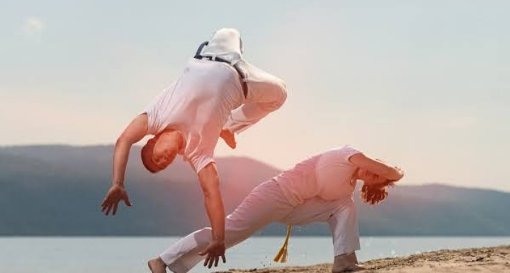

capoeira surgiu como resposta a violência a qual os escravizados eram submetidos em tempos coloniais e imperiais no Brasil.
A partir de golpes e movimentos corporais ágeis, a luta permitia que eles se defendessem das brutais perseguições dos capitães do mato, cuja atribuição era capturar quem havia fugido.
Em 5 de abril de 1889, nascia Vicente Ferreira Pastinha, responsável pela difusão da Capoeira Angola , bem como pela reunião e organização dos princípios e fundamentos de um dos maiores símbolos da cultura brasileira.
A data de 5 de fevereiro marca 47 anos da morte de Manoel dos Reis Machado, conhecido como Mestre Bimba, o criador da Capoeira Regional que ganhou o Brasil e o mundo. Ainda hoje, Mestre Bimba é referência e inspiração
Durante um jogo realizam-se movimentos como: ginga, meia-lua, rabo de arraia, martelo de chão, chapa, tesoura, rasteira, aú, chamadas, entre outros
Armada: É o chute com o lado externo do pé, em que o corpo dá um giro de 360 graus por trás.
Aú: É o movimento de deslocamento também conhecido como "estrela". Serve como esquiva contra golpes de rasteira
Benção: É o chute frontal no qual se atinge e empurra o adversário com a sola do pé.
<
Cabeçada: golpe aplicado com a cabeça contra o adversário para desequilibrá-lo ou feri-lo.
Ginga: é o movimento básico da capoeira. Consiste num movimento repetitivo de colocar a mão direita para frente e a perna direita para trás, e em seguida fazer o mesmo com o lado esquerdo do corpo, sincronizando o movimento com o ritmo do berimbau. A partir deste movimento básico, se desferem todos os demais golpes da capoeira.
Maculelê: é o nome da luta com bastões e facões que é praticada em conjunto com os movimentos e o ritmo da capoeira. No choque entre os facões, é produzida uma fagulha de grande efeito estético.Maculelê: é o nome da luta com bastões e facões que é praticada em conjunto com os movimentos e o ritmo da capoeira. No choque entre os facões, é produzida uma fagulha de grande efeito estético.
Martelo: golpe com o peito do pé.
Martelo (à direita) e esquiva (à esquerda)
Meia-lua: é o chute com a canela, em que o corpo dá um giro de 360 graus por trás.
Meia-lua de frente: igual à queixada, só que com a parte interna do pé.
Meia-lua de frente
Negativa: é o movimento de esquiva em que o praticante se abaixa até ficar rente ao solo, com uma perna estendida e a outra flexionada para desviar do oponente.
Negativa
Queixada: golpe circular com a parte externa do pé.
Queixada
Rabo de arraia: o lutador dá uma cambalhota no ar e golpeia o adversário com os calcanhares.
Rasteira: golpe desequilibrante aplicado com o pé varrendo a perna de apoio do adversário.
Tapona: tapa visando a machucar ou distrair o adversário.
Tesoura: envolve-se o adversário com as pernas e se movimenta-as em sentidos contrários, de modo a derrubar o adversário.
Voo do morcego: o lutador salta e golpea o adversário com os dois pés.
CapoeiraHistóriaConclusão
Base paralela.
Esquiva lateral.
Esquiva de fundo.
Esquiva trocada.
Esquiva rotativa.
Esquiva na diagonal.
Esquiva alta
